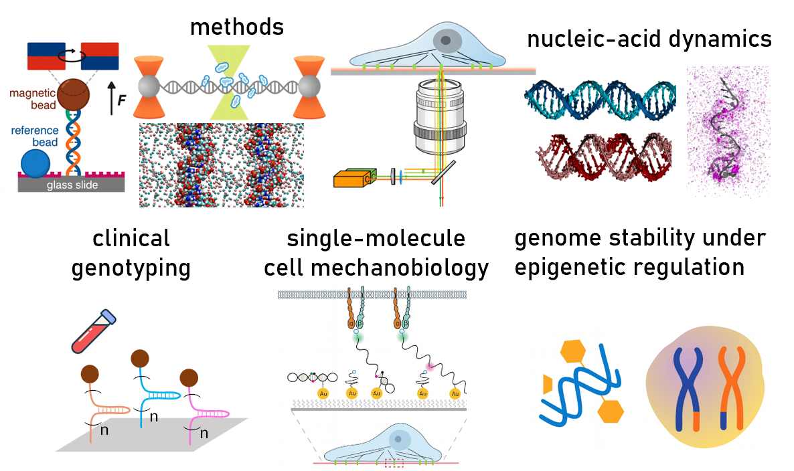

Magnetic tweezers
Single-molecule force and torque measurements of nucleic acids and protein-nucleic acid complexes.
College of Life Sciences, Wuhan University
Zhang Lab integrates single-molecule force spectroscopy, fluorescence assays, biochemical measurements, and molecular dynamics simulations to study how DNA, RNA, RNA-DNA hybrids, and chemically modified nucleic acids change structure, mechanics, and biological function.

Research Interests
The lab develops programmable DNA and RNA molecular probes for single-molecule manipulation, live-cell force sensing, mutation-sensitive nucleic-acid detection, gene-editing specificity studies, and nanopipette-based DNA characterization.
The lab studies how epigenetic DNA modifications reshape DNA elasticity, condensation, hybridization, homologous recombination, and protein-DNA interactions, including 5-methylcytosine and N6-methyladenine systems.
The lab investigates how salt, temperature, force, solvent, ions, and protein binding regulate the deformation, twist-stretch coupling, elasticity, and stability of DNA, RNA, and RNA-DNA hybrid duplexes.
Lab Overview
Zhang Lab focuses on quantitative single-molecule biophysics of nucleic acids. The lab designs DNA-based mechanical and molecular probes, measures the mechanics of DNA, RNA, RNA-DNA hybrids, and polysaccharide chains, and uses physical models to explain how molecular structure controls biological function.
The lab's work spans fundamental nucleic-acid mechanics, epigenetic regulation, cell mechanobiology, clinical sample detection, protein-nucleic acid interactions, ion-mediated stability, and the emerging single-molecule biology of modified RNA and polysaccharides.
Methods
Single-molecule force and torque measurements of nucleic acids and protein-nucleic acid complexes.
Single-molecule fluorescence assays for conformational dynamics, force probes, and molecular interactions.
Ensemble and functional assays that connect single-molecule observations to biological mechanisms.
Simulations that interpret measurements and test mechanistic models of nucleic-acid structure and mechanics.
Representative Highlights
DNA-based ForceChrono probes: reversible DNA fluorescence probes were developed to measure the magnitude, duration, and loading rate of single-molecule forces in living cells.
Amplification-free molecular detection: tandem DNA hairpin probes enabled mutation-sensitive, multiplexed nucleic-acid detection in serum and saliva samples without amplification.
DNA methylation mechanisms: studies of 5mC and 6mA revealed how methylation can regulate DNA condensation, hybridization, RecA-mediated homologous recombination, and DNA repair-related processes.
DNA, RNA, and RNA-DNA hybrid mechanics: magnetic tweezers and simulations uncovered how ions, salt, temperature, stretching force, solvent, and protein binding regulate duplex deformation, elasticity, and twist-stretch coupling.
View detailed research themesPrincipal Investigator
Prof. Xing-Hua Zhang is a professor and doctoral supervisor in the College of Life Sciences at Wuhan University. His research focuses on developing single-molecule technologies, designing DNA mechanical probes for cell mechanobiology and clinical sample detection, revealing how methylation regulates DNA structure and function, and uncovering dynamic mechanisms of nucleic-acid structural regulation.
According to the public CV materials provided for this website, his corresponding-author and first-author research has appeared in journals including Cell, Nature Communications, PNAS, Physical Review Letters, Journal of the American Chemical Society, Science Advances, Nucleic Acids Research, PLoS Biology, ACS Nano, ACS Sensors, Carbohydrate Polymers, Macromolecules, Communications Biology, and Biophysical Journal.
Meet the labResearch Directions
Building on single-chain stretching of polysaccharides, the lab aims to connect sugar-chain composition, ionic response, conformation, and hydrogel or biomaterial mechanics.
The lab aims to quantify how RNA modifications alter elasticity, stability, folding landscapes, conformational dynamics, and functional outcomes in RNA, DNA, and RNA-DNA hybrid systems.
The lab aims to develop next-generation DNA mechanical probes and tunable biomimetic matrices to study dynamic single-molecule forces in disease-related cell microenvironments.
Contact